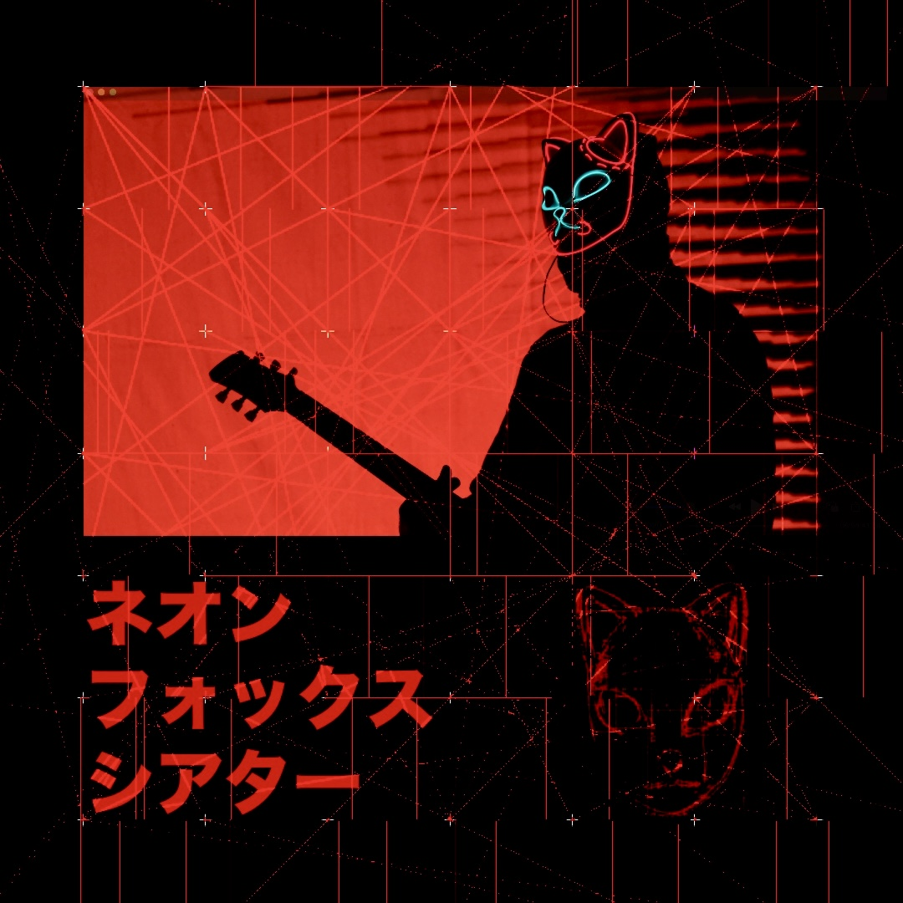
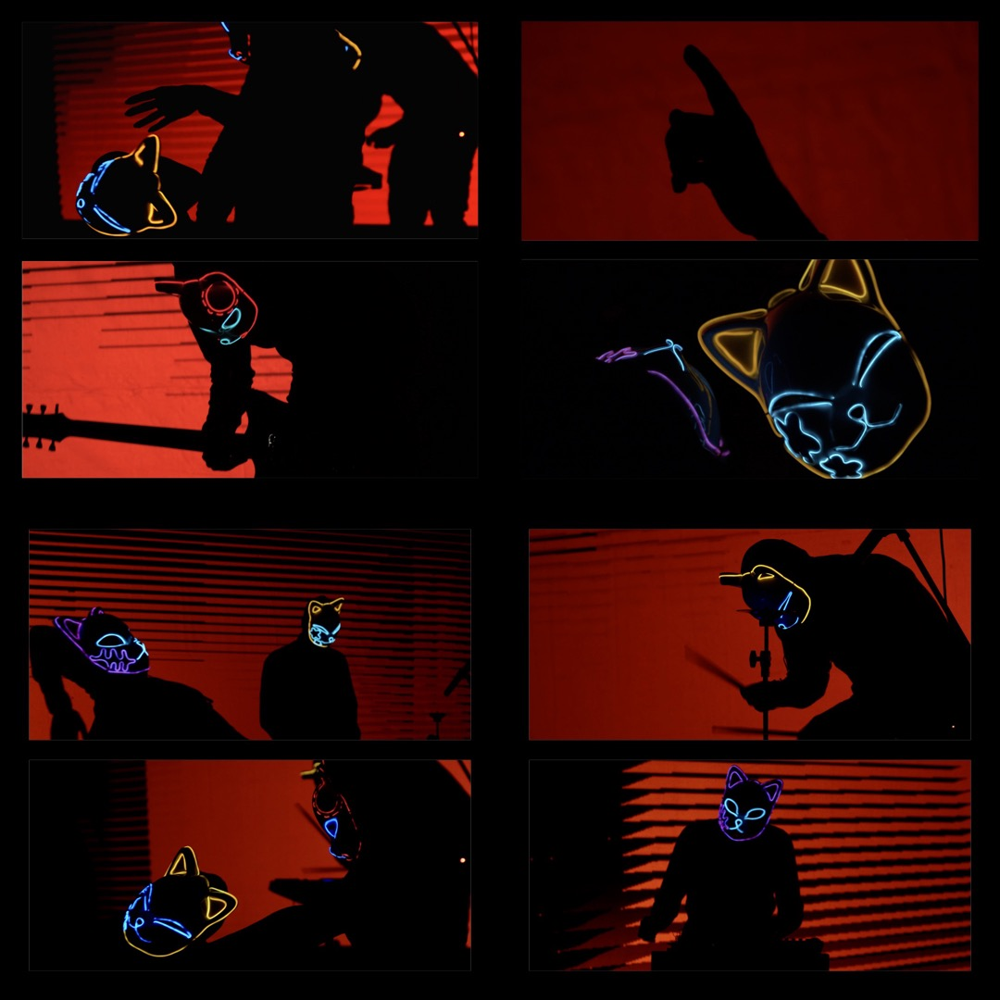
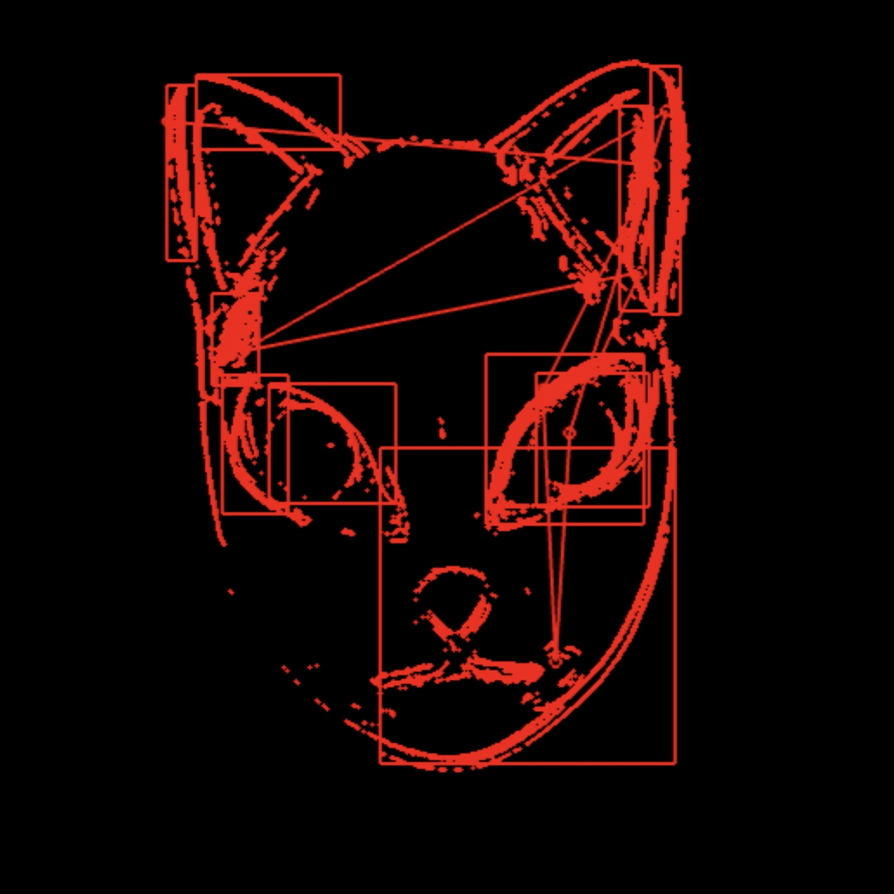
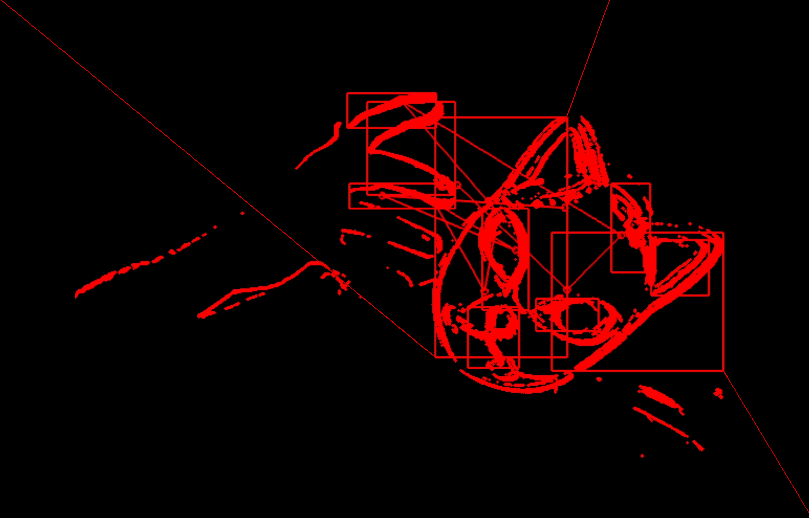
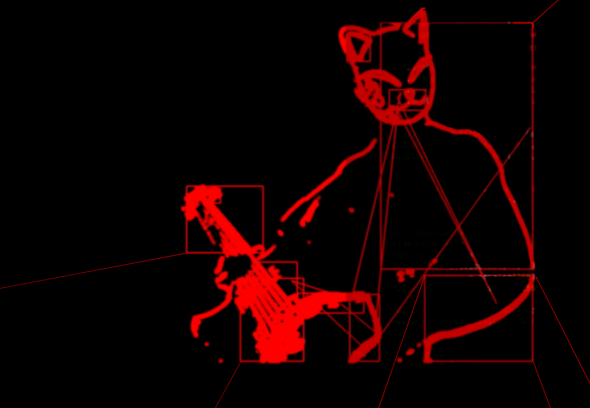
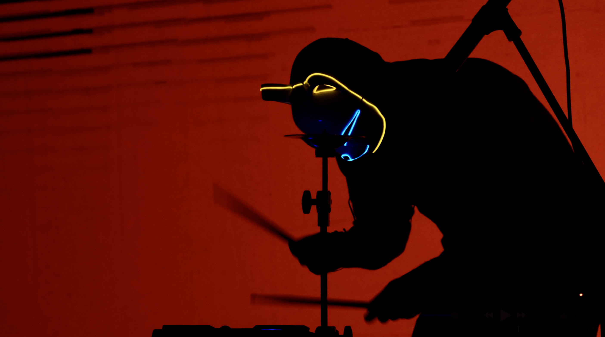
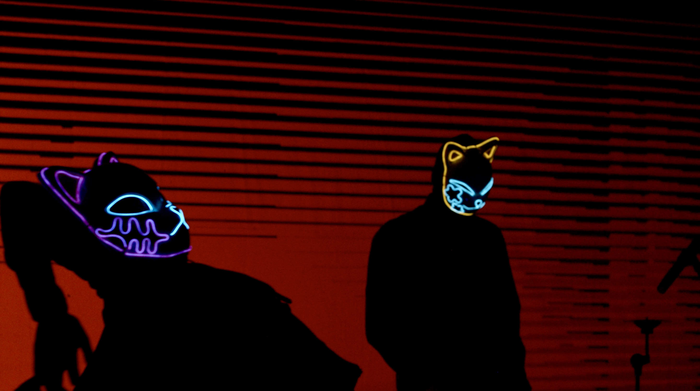

Il Teatro delle Volpi al Neon
Una performance per raggiungere l'invisibilità
The Neon Foxes Theater
A Performance to Achieve Invisibility
Invisibilità digitale
Viviamo in un’epoca in cui la visibilità è la valuta che più ci vincola. Alcuni algoritmi sono programmati per estrarre valore da ogni nostro gesto, catalogandoci in un sistema che riduce l’essere umano a un profilo commerciale composto di dati “estratti” dal nostro quotidiano muoverci nell’infrastruttura digitale.
Nelle performance del Teatro delle Volpi al Neon, l’arte decide di scomparire. I corpi, le ombre, i suoni cessano di essere identificabili sfuggendo alle trame della leggibilità.
I corpi scompaiono per diventare presenze, i singoli frammenti musicali si fondono in un continuo sonoro indecifrabile.
La danza stessa è una dissonanza, non un messaggio, ma un rumore — un disturbo che destabilizza l’infrastruttura.
Ogni performance delle Volpi è un’anomalia statistica non computabile.
Un segnale decifrabile è un segnale sfruttabile
Essere visibili, oggi, significa rinunciare a essere liberi.
Con ogni gesto e con ogni suono, il Teatro delle Volpi al Neon evoca un territorio di incomprensibilità.
Quella delle volpi è una performance che esplora il margine, lo spazio dove il significato evapora.
Il movimento dei corpi, segmentato e privo di schema, e i suoni scuri e non lineari, si affermano come frammenti di un linguaggio opaco, non catalogabile.
Gli spiriti delle volpi mutaforma diventano pura anomalia, un rumore che non risponde alle aspettative di riconoscimento della macchina, una frattura nell’infrastruttura che misura e controlla.
I corpi dietro le maschere al neon diventano statistica imprecisa, eccedenza, frammento illeggibile, il loro rumore non è un errore, ma una zona franca, un luogo dove l’arte si sottrae al dominio della visibilità.
Il dispositivo dell’anonimato: la maschera
Nell’era della sorveglianza onnipresente, il volto è ridotto a un’identità decifrabile, una firma biometrica che ci colloca e ci definisce.
Le maschere indossate nel Teatro delle Volpi al Neon non sono semplici costumi, sono dispositivi di resistenza, atti di scomparsa.
Scegliendo l’anonimato come forma di autonomia, le Volpi al Neon diventano presenze inafferrabili, opache, portatrici di un'identità che non può essere ridotta a un insieme di dati.
La maschera non cela, ma elimina. È una cancellazione dell’individualità in favore di una collettività indistinta, che si muove in uno spazio sottratto alla riconoscibilità e alla profilazione.
I corpi e i suoni non offrono narrazioni, sfuggendo ad ogni struttura, si trasformano in ombre pronte a scomparire nell’uragano di dati.
L’invisibilità nel rumore statistico
La materia del suono – resistenza e dissonanza
Nel Teatro delle Volpi al Neon il suono non è un segnale ma un’interferenza.
In un’epoca che misura ogni vibrazione, ogni frequenza, e la traduce in codice, le volpi scolpiscono il suono come una sorta di nebbia digitale, una presenza che, anziché rivelare, nasconde.
Il flusso che ne risulta è una stratificazione di dissonanze che non suggerisce né direzione né significato; è pura materia sonora che oppone resistenza alla decodifica.
Nella stratificazione del continuo i suoni perdono la loro leggibilità, diventando massa percepibile ma indistinguibile.
È così che la performance si configura come uno spazio d’insubordinazione.
Un suono che non è né dentro né fuori dalla logica, ma che resiste alla gabbia dello schema.
Il Corpo opaco
Nelle società contemporanee, il corpo è sempre più un oggetto misurabile.
La vita viene codificata in pattern prevedibili e manipolabili.
Il corpo si fa dato, questa riduzione non solo sottrae complessità alla corporeità, ma la ingloba in una logica economica di sfruttamento e controllo.
Questo processo di colonizzazione del corpo attraverso il codice è l’ennesimo tentativo di cattura dell’umano nell’inesorabile logica del calcolo.
Nel Teatro delle Volpi al Neon il corpo è frammentato e non si offre come oggetto estetico o narrativo, ma si manifesta come un’alterità alla grammatica convenzionale del movimento.
Quella delle Volpi è una pratica che destabilizza le tradizioni del linguaggio corporeo, è una critica performativa al sistema di sorveglianza, un gesto di sottrazione che produce opacità laddove si richiede trasparenza.
L’opacità non è semplicemente un’assenza di visibilità, ma una scelta politica e artistica. In un’epoca che esige trasparenza di ogni azione, le volpi rivendicano il diritto del corpo a nascondersi, a non essere profilato, a sottrarsi.
Il corpo diventa una presenza senza un'identità tracciabile.
L’Ombra come linguaggio – l’impronta di un passaggio
Cosa ci resta una volta che l’identità è cancellata?
Il Teatro delle Volpi al Neon fa dell’ombra il suo mezzo espressivo, il suo linguaggio.
Queste ombre, che emergono dal flusso di dati, non sono semplici duplicati dei performer, ma impronte di un passaggio.
L’ombra non ha un volto né una forma stabile; è memoria dell’assenza, una traccia impalpabile che non si offre alla decodifica.
Ogni performer è una figura senza identità, la cui esistenza si disperde in un profilo evanescente, come un ricordo impossibile da afferrare.
Le ombre stesse diventano così un gesto di resistenza, un rifugio, una dimensione parallela dove la trasparenza e la tracciabilità non esistono.
La nebbia sonora e l’anomalia percettiva. (parte1)
Nella società digitale contemporanea, il suono viene trattato come un’informazione pura, trasformata in dati, segmenti e segnali che sono facilmente decifrabili, codificabili e classificabili.
In quest’ottica, il suono, imbrigliato nella gabbia delle sue sovrastrutture (la musica), diventa trasparente, ridotto alla sua funzione di “segnale”, un impulso diretto che può essere letto, compreso e immesso all’interno delle infrastrutture di analisi, per essere più facilmente fruito dall’udito del consumatore.
Nelle performance del Teatro delle Volpi al Neon questo principio fondamentale viene sovvertito proponendo il suono come una sorta di barriera, un campo opaco che si oppone all’analisi algoritmica, un’anomalia percettiva all’interno di un rituale di insubordinazione sensoriale.
Il suono non cerca di essere accolto dall’ascoltatore o interpretato da un algoritmo. Al contrario, si erge come un ostacolo, qualcosa che confonde, che disturba gli schemi di comprensione.

La nebbia sonora e l’anomalia percettiva. (parte2)
La stratificazione sonora non segue nessuna melodia, non si appoggia su nessun pattern ritmico, ma sovrappone una serie di frequenze che sembrano amplificarsi l’una con l’altra, creando una nebbia sonica nella quale a scorrere sono solo zone di alta o bassa densità.
In questa nebbia le volpi “scolpiscono” la materia sonora, modellando un suono che non è più un mezzo di comunicazione, ma un’esperienza sensoriale quasi tattile.
La nebbia sonora avvolge sia le volpi che il pubblico in uno spazio insondabile nel quale lo smarrimento intersoggettivo crea vicinanza nell’invisibilità.
Teatro delle Volpi al Neon
Il Teatro delle Volpi al Neon è una performance che agisce sulla stratificazione di vari piani di opacità.
Un’opacità che è al tempo stesso politica ed estetica.
È la creazione di uno spazio libero dalla sorveglianza, dove i corpi e i suoni non sono più oggetti di controllo, ma luoghi di resistenza.
Non c’è funzione, ma puro divenire: i corpi e i suoni si dissolvono, si frammentano e si oppongono.
In un mondo ossessionato dalla visibilità e dalla leggibilità, questa performance rivendica il diritto di scomparire.
È l’arte della dissoluzione, l’estetica di un corpo che si nega alla macchina e si riconfigura in un rumore oscuro e denso nel quale i profili sono evanescenti e i codici si mescolano nella nebbia.